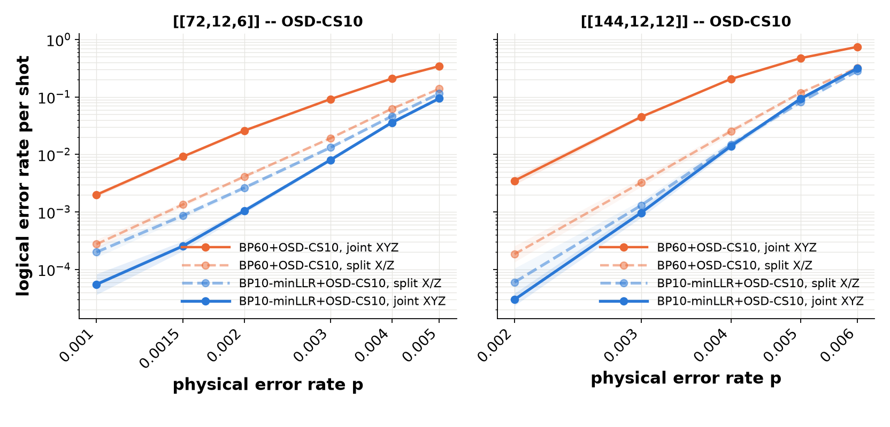
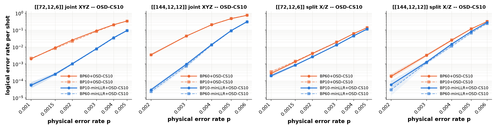

Using Min-LLR OSD Initialization with BP+OSD
Belief propagation followed by ordered-statistics decoding (BP+OSD) is commonly used to decode quantum LDPC codes. When BP fails to converge, OSD sorts the columns of the parity-check matrix by how likely BP believes each error is, solves the syndrome on the most likely columns, and optionally searches low-weight alternatives (OSD-CS). The quality of the OSD solution therefore depends on the quality of that column ordering.
By default the ordering is taken from the marginal log-likelihood ratios (LLRs)
after the last BP iteration. On circuit-level detector error models, BP that has
not converged is frequently oscillating: a column that BP was confident about at
iteration 6 may look unremarkable at iteration 60. The NV-qLDPC decoder’s
osd_init_method="min_llr" option instead orders columns by the minimum
marginal LLR each column reached over all BP iterations, so a column that was
confident of an error at any point in the trajectory sorts first. The running
minimum is tracked inside the BP kernel and does not require storing the full LLR
history.
import cudaq_qec as qec
# From a circuit-level DEM of the code:
# H detector-error matrix (detectors x error mechanisms)
# L observables-flips matrix (observables x error mechanisms)
# error_rates prior probability of each error mechanism
decoder = qec.get_decoder(
"nv-qldpc-decoder", H, error_rate_vec=error_rates,
O=L, # decode straight to observables
use_sparsity=True, use_osd=True,
osd_method=3, osd_order=10, # OSD combination sweep, lambda = 10
max_iterations=10, # only 10 BP iterations ...
osd_init_method="min_llr", # ... ordered by the running-min LLR
bp_batch_size=2048)
# With O given, each result is the predicted observable flips (k bits),
# not a correction vector; compare it directly to the measured observables.
results = decoder.decode_batch(syndromes)
predicted = [r.result for r in results]
Note the iteration count: ten BP iterations, not the 50-100 that BP+OSD configurations usually run. Min-LLR ordering can use information encountered before BP converges, which permits a shorter BP trajectory. Below we compare this configuration (BP10-minLLR+OSD-CS10) against the conventional BP60+OSD-CS10 on bivariate-bicycle (BB) codes as a function of the physical error rate.
Column Ordering Importance and Sensitivity
A circuit-level DEM that annotates both the X- and Z-type detectors (“joint XYZ”, or correlated decoding) retains more information than one that keeps only the detectors of the basis being measured (“split X/Z”, or uncorrelated decoding): a Y error on a data qubit is a single, correctly-weighted mechanism in the joint DEM but is modeled as two independent X and Z errors in the split DEMs. In practice, however, BP+OSD has been observed to decode the uncorrelated problem more accurately. The Tesseract paper by Beni, Higgott and Shutty (arXiv:2503.10988) notes that the uncorrelated variant receives “much less information about the error model,” yet is “significantly more accurate than correlated BPOSD”. The paper attributes this behavior to trapping sets: “Y-type errors can cause trapping sets in BP-based decoders when both bases of detectors are annotated.” Overlapping X and Z stabilizers introduce short cycles through Y errors on their shared qubits, and the joint DEM contains more low-weight degenerate configurations. As the authors note, “both degeneracy and short cycles in the Tanner graph are known to be problematic for BP-based decoders.” These effects can prevent BP from converging and make its final marginals a poor basis for OSD ordering.
Running-minimum LLR ordering preserves information from earlier BP iterations instead of relying only on the final marginals. In the experiment below, this change makes the correlated decoder at least as accurate as the split decoder across the measured physical error rates.
Experiment
The circuits are the bivariate-bicycle memory-Z experiments published with the
Relay-BP decoder (tests/testdata/bicycle_bivariate in the
trmue/relay repository, Apache-2.0): 6 and 12 rounds of syndrome
extraction for [[72,12,6]] and [[144,12,12]] respectively, under uniform
circuit-level depolarizing noise with one file per physical error rate. Two kinds of
circuit-level DEM are built from them:
joint XYZ – the circuits as published, which annotate both the X- and Z-check detectors; the DEM has all circuit-level error mechanisms (about 16k for
[[72,12,6]], 68k for[[144,12,12]]).split X/Z – the same circuits with the X-check detectors removed, so only the detectors of the basis being decoded remain (the
assets/benchmarksfiles in this repository; 2.2k and 8.8k mechanisms respectively).
Each decoder configuration under test is an arm of the experiment (the term comes
from the benchmark script, whose --arms option selects them; the two compared here
are BP60+OSD-CS10 and BP10-minLLR+OSD-CS10, and the matched-iteration controls below
add two more). All arms decode the same sampled syndromes, so comparisons between arms
are paired. An arm is stopped once it has observed 100 logical failures or reached the
shot cap; points with zero observed failures are shown as their 95% Wilson upper bound.
Parameter |
Value |
|---|---|
GPU |
NVIDIA GB200 |
Codes |
|
Noise model |
uniform circuit-level, |
Shot cap |
200,000 ( |
Stopping rule |
100 logical failures per arm (pooled over the independent samples above) |
|
0 (sum-product, default) |
|
60 (baseline) / 10 (min-LLR arms) |
|
True |
|
3 (combination sweep) / 10 |
|
|
|
True |
|
2048 |
Priors |
|
Results
For each code, the same memory-Z circuit and the same sampled syndromes are decoded two ways: dashed, faded curves use the split X/Z DEM (uncorrelated decoding), solid curves the joint XYZ DEM (correlated decoding). Orange is the conventional BP60+OSD-CS10, blue is BP10-minLLR+OSD-CS10. Shaded bands are 95% Wilson intervals; each point is stopped at 100 or more logical failures.

Three observations:
With the default ordering, correlated decoding loses (solid orange above dashed orange). This reproduces the Tesseract paper’s observation: the correlated decoder is worse than the uncorrelated one by 6x-7x for
[[72,12,6]]atp<= 0.002 and by 14x-19x for[[144,12,12]]atp= 0.002-0.003, despite having strictly more information about the noise.The min-LLR ordering removes this penalty and makes correlated decoding advantageous (solid blue below dashed blue). On the joint XYZ DEMs, min-LLR ordering reduces the logical error rate increasingly as
pfalls, reaching improvements of 36x for[[72,12,6]]and 117x for[[144,12,12]]at the lowest measured rates. Unlike the default-ordering curves, the min-LLR curves retain a steep low-pslope rather than flattening toward saturation. With min-LLR ordering, correlated decoding is at least as accurate as split decoding at every measured rate and is clearly better where the confidence intervals separate.On the split X/Z DEMs the ordering matters much less (dashed blue only modestly below dashed orange): 1.2x-1.6x for
[[72,12,6]]and 1.1x-3.1x for[[144,12,12]], largest at the lowest rate. Those DEMs have no Y-induced 4-cycles, so BP oscillates less and the final marginals are already a reasonable ordering. This is consistent with min-LLR ordering being most useful when short cycles impede BP convergence.
On the iteration count: BP converges on only about 1% of joint-XYZ syndromes within 10
iterations at these rates (and on well under half even at 60 for p >= 0.002), so on
those DEMs the decoder relies primarily on OSD, with BP providing the column ordering.
Ten iterations are sufficient for the configuration evaluated here. Compared with the
60-iteration baseline, this uses six times fewer BP iterations while achieving a lower
logical error rate.
Controls: Ordering Versus Iteration Count
The two arms above differ in both max_iterations and osd_init_method. To
attribute the improvement, two matched-iteration controls were run on the same
syndromes: BP10+OSD-CS10 (10 iterations, default ordering) and BP60-minLLR+OSD-CS10
(60 iterations, min-LLR ordering). Dashed curves are the controls, drawn in the hue of
the arm that shares their OSD ordering.

The results show that min-LLR ordering accounts for nearly all of the accuracy improvement. Increasing BP from 10 to 60 iterations without changing the ordering has little effect. With min-LLR ordering, the additional iterations provide a smaller, code-dependent benefit. Ten iterations therefore offer a strong cost-accuracy tradeoff, retaining most of the gain with about one sixth of the BP work.
See Also
Quantum Low-Density Parity-Check Decoder – the nv-qldpc-decoder overview